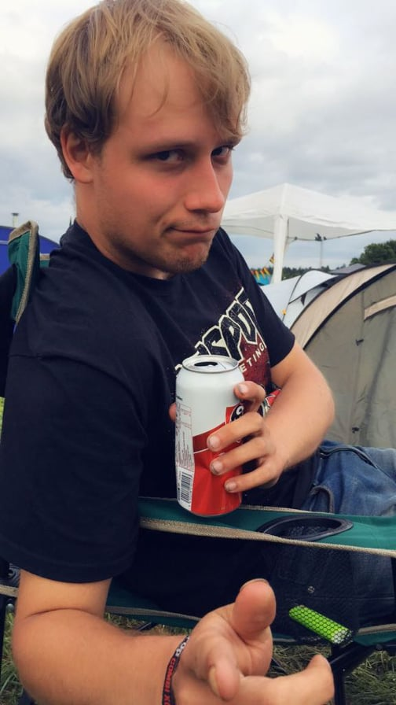
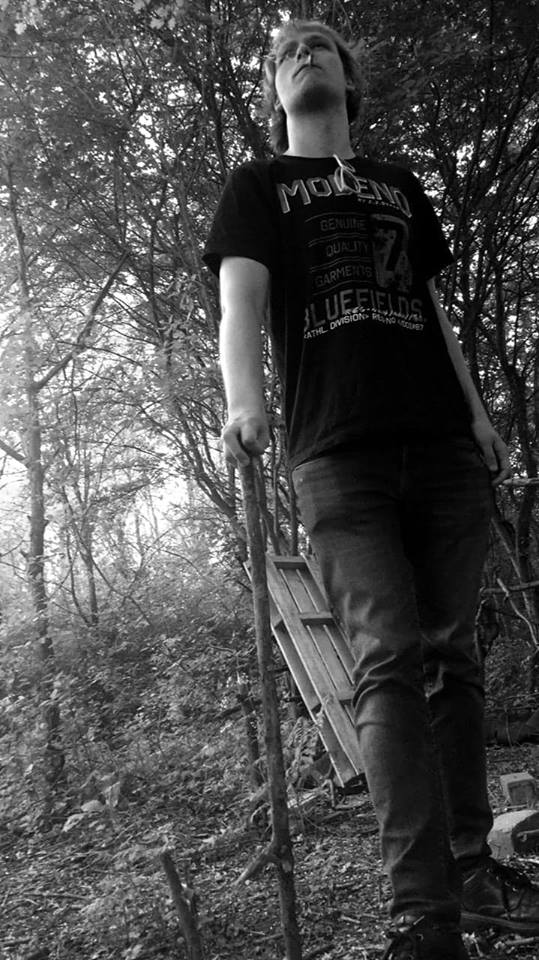
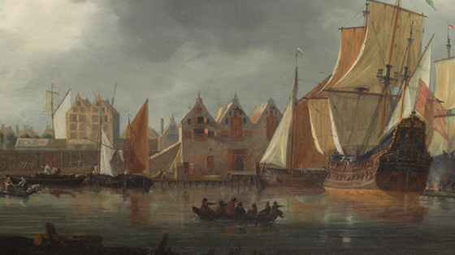

 Beste lezer, welkom op mijn portfolio over wie ik precies ben, en nog belangrijker waarom ik dat ben! Mijn naam is Sander Geldof, 21 jaar oud en zit nu op kamers in Rotterdam, oorspronkelijk uit Zeeland. Ik woon daar omdat ik inmiddels de studie Applicatieontwikkeling volg aan Het Davinci College te Dordrecht.
De reden dat ik voor Applicatieontwikkeling heb gekozen is onder andere omdat ik geen persoon ben die is aangelegd om hele dagen op school in de boeken te werken, daar kwam ik snel genoeg achter. Ik heb nog op de Hogeschool gezeten en deed daar Geschiedenis. Ik wou iets practischer, iets meer handenwerk in plaats van een half boek lezen en daar een toets over maken. Zelf was ik sowieso al veel bezig met de computers, sinds kinds af aan al met mijn broer. Dus ik ben rond gaan kijken. Open dagen en meeloopdagen bezocht en applicatieontwikkeling leek me gewoon echt heel vet om te studeren en gewoon om te kunnen. Mijn broer maakt ook applicaties en ik vind het echt geweldig om te zien hoe het werkt. Vandaar dat ik ook applicatieontwikkelaar wil worden.
Motivatie is iets waar ik vooral op school heel weinig van had, ik merk nu ik hier achter mijn computer werk ik totaal geen drang heb om iets anders te doen als mijn “werk”. De leraren zien ook wel dat er veel gegamede wordt, en dat is iets waar Ik mezelf in ken. Daarom heb ik een laptop met zowat geen spelletjes erop. Zodat dat geen afleiding is en door kan werken. Mijn motivatie is ook echt een diploma halen. Ik heb afgelopen jaren “stil gezeten” door te werken en geen school meer te volgen en ik heb een drang om iets af te maken nu. En dat is mijn grote motivatie.
Persoonlijk kijk ik erg uit naar de opleiding en de lessen omdat ik echt graag iets wil halen. de diploma is waar ik voor werk en ik denk ook dat ik die wel kan halen. bovendien hoop ik ook meer te leren tot een bepaald punt dat ik er naar uit kan kijken om thuis verder te gaan voor mezelf en zelf iets te bouwen, hoeft niet eens perse voor de opleiding te zijn maar gewoon om mn eigen talenten te kunnen ontplooiien
Nadat de lessen “klaar” zijn ga ik standaard naar mn kamer met mn spullen. En vrijwel altijd start ik mn laptop direct op om te checken of ik nog iets moet doen (ik wil altijd zo snel mogelijk van huiswerk enzo af zijn), als dat het geval is kijk ik er nog naar. Mijn laptop staat ook naast mn computerkast en daar staan wel spelletjes op maar ik merk ook dat die me steeds minder intereseren en dat ik in mn eigen vrije tijd youtube op ga en bijv filmpjes kijk over javascript. En ik denk dat naarmate ik langer op de opleiding zit dat nog meer en beter word.
Zelf zou Ik mezelf willen ontwikkelen en verbeteren op het vlak van de echte apps maken met codering etc. mijn broer deed dit ook altijd en ik ben er ook gefascineerd door en dat lijkt me ook het leukst. Apps of iets creëeren op idee van degene die daar om vraagt.
Voor ik hier zat heb ik nog andere studies gevolgd, basischool standaard en middelbaar onderwijs, daar deed ik HAVO Economie & Maatschappij. Helaas zat ik op een school met maar 1000 leerlingen en daardoor ook niet veel leraren waardoor mijn keuze is vakken eigenlijk vrijwel compleet beperkt was van mn profiel. ik had graag nog informatica erbij gehad maar daarintegen kreeg ik kunst. Na het havo afgerond te hebben heb ik nog een jaar Docent Geschiedenis gestudeert op de hogeschool Rotterdam. De Geschiedenislessen en alles wat erbij komt vond ik heel interresant en leuk maar het leraarschap (sorry voor elke leraar die dit leest) is echt helemaal niks, niks voor mij in ieder geval. En daarna nog 2 tussenjaren thuis aan het werk In de horeca en nu zit ik hier. Het jammere van de opleidingen die ik al gehad heb is dat er vrijwel niks aansluit. Net mijn vaardigheden in planning en thuis nog iets doen voor school zijn er daardoor wel goed ingeprint.
Ik heb zelf nog 2 bijbaantjes gehad, beide in de horeca. Een van deze baantjes was bij een redelijk chique tent genaamd Het Mauritshof voor brunches en vergaderingen waar ik voornamelijk in de afwas stond en ik weet niet of ik zo heel veel daaruit kan gebruiken voor de opleiding hier. De afwas was meestal gewoon doorzetten en doorwerken en misschien dat het doorzettingsvermogen me kan helpen nog op de opleiding. Ik heb ook nog 5 jaar in een frituur/snackbar De Smaakmaker gewerkt en daar heb ik wel geleerd om goed met klanten te kunnen praten en ze ook gericht iets kan uitleggen en vooruit plannen (voorbakken etc). voor de rest heb ik niet echt iets van een goed, leuk aansluitend baantje gehad wiens ervaring ik had kunnen gebruiken voor de opleiding hier.
En nog iets over mezelf natuurlijk. zoals u al las kom ik oorspronkelijk uit Zeeuws-Vlaanderen, Zeeland. ik woonde ongeveer 5 minuten fietsen van de grens af. het was een redelijk boers leven tot nu gelukkig. boeren is namelijk niet voor mij aangelegd. voor de rest zijn mijn hobby's Geschiedenis lezen en films van kijken. ik vind het gewoon heerlijk en geweldig om de oorzaak-gevolg verbanden te zien die uiteindelijk tot onze culturele maatschappij hebben gevormd. bovendien lees ik filosofie. Nietsche vind ik geweldig om te lezen mocht. en natuurlijk gamen ook nog een beetje, ook al begint dit af te zwakken en dat zijn voornamelijk strategie spellen Total war, Age of Empires etc. Ik luister de hele dag door voornamelijk rock en metal muziek. al vind ik muziek voor de tijd dat ze door computers gemaakt worden zoals nightcore ofzoiets nog steeds het best. tegenwoordig maken ze helaas niet veel leuks meer. en zo besteed ik mijn vrije tijd. voor mijn geliefde lezer heb ik nog een voorbeeld van nederlandse metal erbij gezet. Let op de tekst kan soms beledigend zijn !
Ik hoop dat u genoten heeft van mijn portfolio